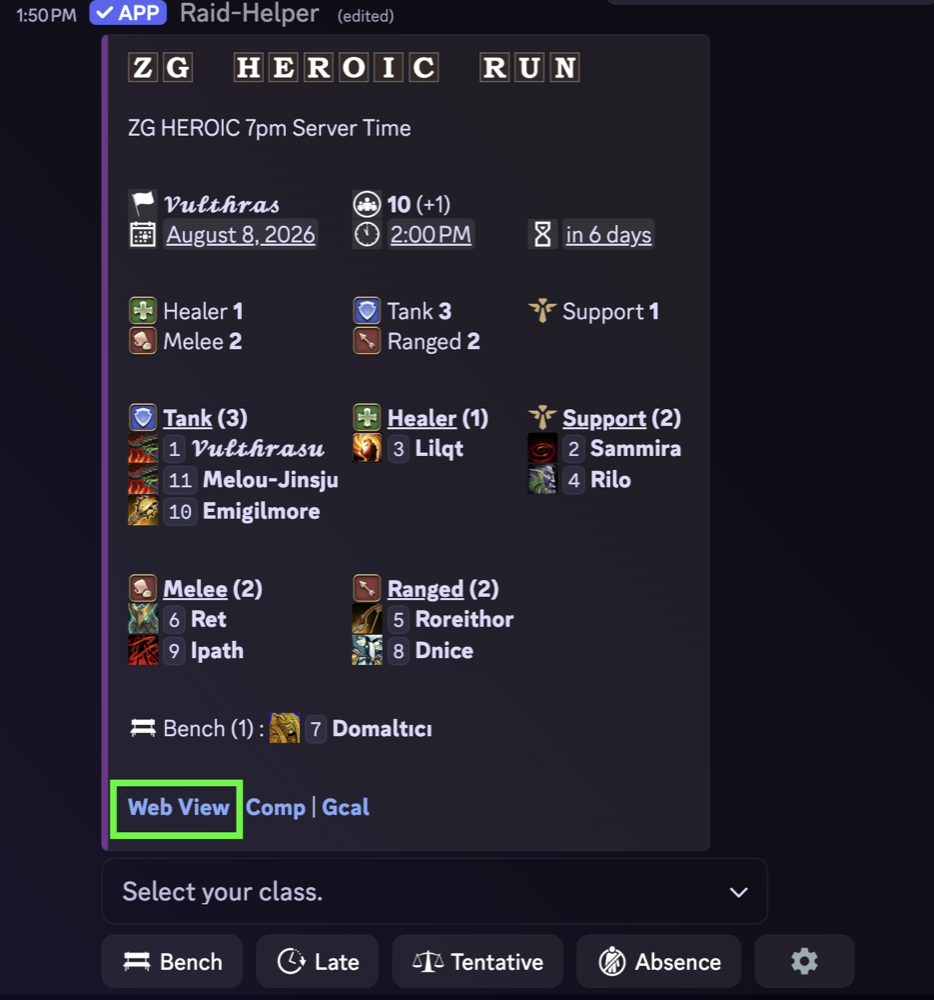
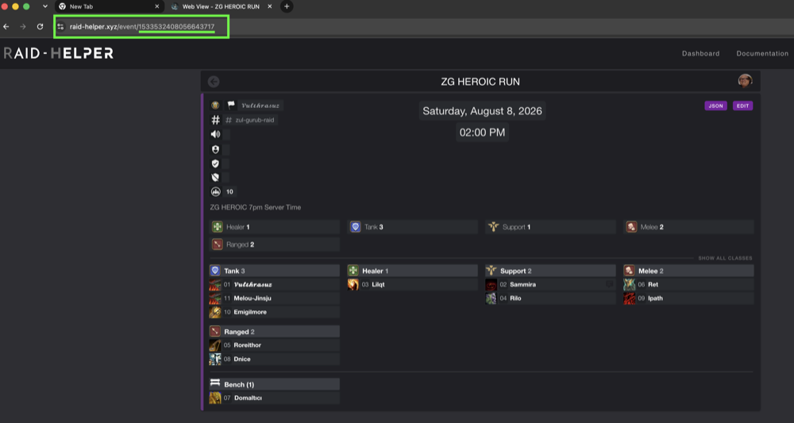
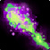
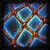
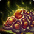
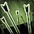
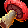
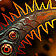
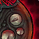
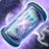

Raid utility
Finding tonight’s event
The id lives in Raid-Helper’s own web view. Three clicks from the raid post in Discord.
- 1
In Discord, find the Raid-Helper post and click Web View at the bottom of it.

- 2
First time only, Discord asks before it lets you out. Click Visit Site. Ticking Trust raid-helper.xyz links from now on skips this next time — optional.
- 3
The event opens in your browser. Copy the whole address, or just the long number at the end of it, and paste it here.

Either form works — raid-helper.xyz/event/1533532408056643717 or just 1533532408056643717. Paste it once and this page remembers it.
- Soothe33 of 21 classes
- Spellsteal33 of 21 classes
- Battle rez55 of 21 classes
- Purge77 of 21 classes
- Raid DR (passive)88 of 21 classes
- Silence88 of 21 classes
- Raid DR (active)1313 of 21 classes
- Interrupt1616 of 21 classes
- Raid damage (active)1616 of 21 classes
- Root1212 of 21 classes
- Stun1212 of 21 classes
- 11 tools · load tonight’s raid to see what it is missing
14sshortest cooldown—no cooldownSanguineonly that spec has ittcosts a talent point+1brings another14s?unverified in game14s!in-game verification in process14spa pet does it, not the class blank = does not bring it
| Stops a cast | Raid tools | Trash only | |||||||||
| Class | Interrupt | Silence | Battlerez | Raid DRactive | Raid DRpassive | Raid DMGactive | Purge | Spellsteal | Soothe | Stun | Root |
|---|---|---|---|---|---|---|---|---|---|---|---|
| 14st | 3stAncestry | 30st+3Ancestry | 40s | ||||||||
Stops a cast Interrupt
Raid tools Raid DR (active)
Raid damage (active)
Trash only Headbutt Stun 40s Brings no Silence, Battle rez, Raid DR (passive), Purge, Spellsteal, Soothe. | |||||||||||
| 24stSanguine | 1.5mtFleshweaver | 1mt+1Fleshweaver | 6s! | 24s+1 | |||||||
Stops a cast Interrupt
Silence
Raid tools Raid damage (active)
Spellsteal
Trash only Shadow Missile Stun 24s / Pursuit Stun 1.5m Brings no Battle rez, Raid DR (active), Raid DR (passive), Purge, Soothe. | |||||||||||
| 30s | —+1 | 24s+1 | 1.5mtTime | 20st? | |||||||
Stops a cast Interrupt
Raid tools Raid DR (active)
Raid damage (active)
Purge
Trash only Clasp of Infinity Root 20s Brings no Silence, Battle rez, Raid DR (passive), Spellsteal, Soothe. | |||||||||||
| 30stDreadnought | —+4 | —t+1Dreadnought, Heretic | —+2 | 6stGodblade | 1.5mp | ||||||
Stops a cast Interrupt
Raid tools Raid DR (active)
Raid DR (passive)
Raid damage (active)
Purge
Trash only Summon: Mindbender Stun 1.5m Brings no Silence, Battle rez, Spellsteal, Soothe. | |||||||||||
| 18stInfernal | 1.5mtTyrant | — | |||||||||
Stops a cast Interrupt
Raid tools Raid DR (active)
Spellsteal
Brings no Silence, Battle rez, Raid DR (passive), Raid damage (active), Purge, Soothe. | |||||||||||
| 30s | 40stVanguard | 30s+1 | —tVanguard | —+8 | 30s | 15st | |||||
Stops a cast Interrupt
Silence
Raid tools Raid DR (active)
Raid DR (passive)
Raid damage (active)
Trash only Battle Rush Stun 30s / Net Throw Root 15s Brings no Battle rez, Purge, Spellsteal, Soothe. | |||||||||||
| 20st | 3mtDefiance | 1.5mt | 3m | ||||||||
Stops a cast Silence
Raid tools Raid damage (active)
Trash only Chains of Malice Stun 1.5m / Hellhaul Root 3m Brings no Interrupt, Battle rez, Raid DR (active), Raid DR (passive), Purge, Spellsteal, Soothe. | |||||||||||
| 30stRime | 10m | 20s+1 | |||||||||
Stops a cast Interrupt
Raid tools Battle rez
Trash only Cryo Freeze Root 20s / Black Ice Root 30s Brings no Silence, Raid DR (active), Raid DR (passive), Raid damage (active), Purge, Spellsteal, Soothe. | |||||||||||
| 24stGeomancy | —+1 | —+1 | —+4 | 10s! | 30s+1 | 30s | |||||
Stops a cast Interrupt
Raid tools Raid DR (active)
Raid DR (passive)
Raid damage (active)
Purge
Trash only Monolith Smash Stun 30s / Mountain Hammer Stun ≥1m / Swoop Root 30s Brings no Silence, Battle rez, Spellsteal, Soothe. | |||||||||||
| 25s | 10m | 30s! | 30s | — | |||||||
Stops a cast Interrupt
Raid tools Battle rez
Raid DR (active)
Raid damage (active)
Trash only Cindergrip Root — Brings no Silence, Raid DR (passive), Purge, Spellsteal, Soothe. | |||||||||||
| 12stBrigand | —t+4Farstrider | —+1 | 1mt!Farstrider | ||||||||
Stops a cast Interrupt
Raid tools Raid damage (active)
Trash only Bushwhack Stun — / Eternal Knockdown Stun 25s / Whipvine Arrow Root 1m Brings no Silence, Battle rez, Raid DR (active), Raid DR (passive), Purge, Spellsteal, Soothe. | |||||||||||
| 20stHarvest | 1.5mt | —+1 | —+1 | ||||||||
Stops a cast Interrupt
Silence
Raid tools Raid DR (passive)
Purge
Brings no Battle rez, Raid DR (active), Raid damage (active), Spellsteal, Soothe. | |||||||||||
| 6s | 2mtEngravement | 5mt | 1m | — | 1m+1 | —+1? | |||||
Stops a cast Interrupt
Raid tools Raid DR (active)
Raid damage (active)
Purge
Spellsteal
Trash only Ice Rune Stun 1m / Everfrost Scroll Stun 1m / Cryobrand Root — / Glacial Rune Root 20s Brings no Silence, Battle rez, Raid DR (passive), Soothe. | |||||||||||
| 10m | —tMoon Guard | 5m | |||||||||
Raid tools Battle rez
Raid DR (passive)
Raid damage (active)
Brings no Interrupt, Silence, Raid DR (active), Purge, Spellsteal, Soothe. | |||||||||||
| 30s+1 | —p? | —+4 | — | 40s! | |||||||
Stops a cast Interrupt
Raid tools Raid DR (passive)
Raid damage (active)
Soothe
Trash only Exhale Root 40s Brings no Silence, Battle rez, Raid DR (active), Purge, Spellsteal. | |||||||||||
| 5mtSeraphim | 3mtBlessings | 5s | 2mt | ||||||||
Raid tools Raid DR (active)
Raid damage (active)
Purge
Trash only Glare Stun 2m Brings no Interrupt, Silence, Battle rez, Raid DR (passive), Spellsteal, Soothe. | |||||||||||
| 2m+1 | 5m | 20s | — | 10s! | |||||||
Stops a cast Silence
Raid tools Battle rez
Raid DR (active)
Raid DR (passive)
Purge
Brings no Interrupt, Raid damage (active), Spellsteal, Soothe. | |||||||||||
| 30sp | 2m | —+2 | 1.5mtInvention | 20s+1 | 15s! | ||||||
Stops a cast Interrupt
Silence
Raid tools Raid DR (active)
Raid damage (active)
Trash only Vanguard X-173: Onslaught Stun 20s / Build: Scrapmaw Stun 30s / Hydraulic Charge Root 15s Brings no Battle rez, Raid DR (passive), Purge, Spellsteal, Soothe. | |||||||||||
| 16s | 10m | 3mtVizier | —tFortitude | 10s | 2m! | 16s+1 | |||||
Stops a cast Interrupt
Raid tools Battle rez
Raid DR (active)
Raid DR (passive)
Soothe
Trash only Poison Eruption Stun 2m / Spindlebind Root 16s / Venocannon Root 1m Brings no Silence, Raid damage (active), Purge, Spellsteal. | |||||||||||
| 28stShadowhunting | 30s+1 | — | |||||||||
Stops a cast Silence
Raid tools Raid damage (active)
Trash only Bwonsamdi's Judgement Root — Brings no Interrupt, Battle rez, Raid DR (active), Raid DR (passive), Purge, Spellsteal, Soothe. | |||||||||||
| 18stBlack Knight | 1.5m | 3mt?Black Knight | 45s | —+1 | 2mtInquisition | ||||||
Stops a cast Interrupt
Silence
Raid tools Raid DR (active)
Raid damage (active)
Soothe
Trash only Darkslayer's Lantern Stun 2m Brings no Battle rez, Raid DR (passive), Purge, Spellsteal. | |||||||||||
Actually stops a boss cast.
Interrupts 17 abilities · 16 classes
effect_id 68 -- INTERRUPT_CAST. Verified against Pyromancer Spellburn and Runemaster Ley Lock.
 Runemaster
every spec
Ley Lock
6s16% mana0.5s
Interrupt your target's spellcasting, preventing any spell in that school from being cast for 2.5 sec.
Runemaster
every spec
Ley Lock
6s16% mana0.5s
Interrupt your target's spellcasting, preventing any spell in that school from being cast for 2.5 sec.
- Ranger Brigand Throatpunch r5 c1 12s25 focusInstant Punch an enemy in the throat, interrupting the enemy's spellcast, preventing any spell from that school of magic from being cast for 2 secon…
- Barbarian every spec Jawbreaker r0 c4 14s30 energyInstant Attempt to break an enemy's jaw, interrupting them and preventing any spell from that school from being cast for 4 seconds.
- Venomancer every spec Nullifying Toxin 16s9% manaInstant Inject an enemy with nullifying toxin, interrupting them and preventing any spell from that school from being cast for 3 sec.
 Felsworn
Infernal
Felbreak
r5 c1
18s10 energy0.5s
Interrupt a spell from being cast, preventing the target from casting spells of that school for 3 seconds and draining mana from the target …
Felsworn
Infernal
Felbreak
r5 c1
18s10 energy0.5s
Interrupt a spell from being cast, preventing the target from casting spells of that school for 3 seconds and draining mana from the target …
- Witch Hunter Black Knight Guard Strike r5 c2 18s100 rageInstant Bash an enemy with your weapon's hilt, interrupting them and preventing any spell from that school of magic from being cast for 3 seconds.
 Reaper
Harvest
Siphon Essence
r6 c6
20s—Instant
Attempt to drain an enemies vitals, leeching 22 + 31.03% AP health, interrupting casting and preventing any spell from that school from bein…
Reaper
Harvest
Siphon Essence
r6 c6
20s—Instant
Attempt to drain an enemies vitals, leeching 22 + 31.03% AP health, interrupting casting and preventing any spell from that school from bein…
- Bloodmage Sanguine Aneurysm r3 c3 24s10% healthInstant Counter the enemy's spellcast, preventing any spell from that school of magic from being cast for 4 seconds. Successfully interrupting an en…
- Primalist Geomancy Cave In r7 c4 24s18% manaInstant Cave in your target, interrupting spellcasting and preventing any spell in that school from being cast for 4 seconds. Successfully interrupt…
- Pyromancer every spec Spellburn 25s9% manaInstant Counters the enemy's spellcast, preventing any spell from that school of magic from being cast for 5 sec.
 Chronomancer
every spec
Fray Magic
30s27% manaInstant
Stop your enemies' timeline, interrupting their spell cast for 4 sec. Successfully interrupting an enemy will additionally silence them for …
Chronomancer
every spec
Fray Magic
30s27% manaInstant
Stop your enemies' timeline, interrupting their spell cast for 4 sec. Successfully interrupting an enemy will additionally silence them for …
- Cultist Dreadnought Crushing Dissonance r5 c7 30s18% manaInstant Unleash a wave of maddening resonance, interrupting the current spell cast of all enemies around you and preventing any spell in that school…
- Guardian every spec Shield of Denial 30s15 energyInstant Toss a shield at an enemy that bounces to up 2 nearby enemies, dealing 155 Physical damage and interrupting their spellcast, preventing any …
- Necromancer Rime Heartchill r4 c0 30s19% manaInstant Chill an enemy's heart, interrupting their current spell cast. Successfully interrupting a spell also reduces their movement speed and haste…
- Stormbringer Maelstrom Mystic Thunder r4 c7 30s15% manaInstant Interrupt the target's current spell cast and then mark them for 5 seconds. If they cast again while marked they are silenced for 3 seconds.
- Tinker every spec Build: Rusthound 30s10% mana6s Construct a Rusthound to accompany the Tinker until dismissed. — Meltdown: Bite an enemy, interrupting their current spellcast and preventing any spells from being cast from that school for 5 sec and reduces their Fire Resistance and healing received by 20%.
- Stormbringer every spec Gust of Wind 35s37% manaInstant Send forth a gust of wind in a frontal cone, knocking enemies back and interrupting all enemies current spell cast, preventing any spell fro…
None for: Knight of Xoroth, Starcaller, Sun Cleric, Templar, Witch Doctor.
Actually stops a boss cast.
Silences 9 abilities · 8 classes
mechanic 9 (SILENCE), or aura_id 27 (MOD_SILENCE) on a spell whose tooltip never claims to interrupt. Two rows are here for that second reason -- Reaper's Ghastly Screech and Witch Hunter's Subjugate both carry effect_id 68 and were filed as interrupts on that alone, while their text describes a silence and nothing else. They keep the effect and are marked (interrupts too); neither class loses its interrupt, since Reaper has Siphon Essence and Witch Hunter has Guard Strike.
What is excluded, and why
The WORD is not enough on its own, which is why the aura is required: Fray Magic, Mystic Thunder and Distracto Shot all mention silencing and all three interrupt FIRST, silencing as a rider. They stay under Interrupts.
A silence stops the NEXT cast and locks casting for a duration. Several also state that they interrupt non-player spellcasting, which makes them the best interrupt substitute available -- those are marked (int). Only rows with a cost or a cooldown are listed; a silence with neither is a component or a talent.
- Knight of Xoroth every spec Chainwhip r0 c2 20s100 rageInstant Swing a chain at an enemy dealing 12 + 35% AP Physical Damage and silencing them for 2 seconds, generating a large amount of threat. If you …
- Witch Doctor Shadowhunting Spirit Shock r6 c7int 28s25% manaInstant Shock an enemy's spirit, silencing them for 4 seconds and interrupting non-player spellcasting for 4 seconds.
- Guardian Vanguard Hammer of the Law r5 c6 40s40 energyInstant Smash an enemy and enemies behind them in a line, dealing 95 + 100% AP High Threat Physical Damage and silencing them for 3.5 seconds.
- Bloodmage Fleshweaver Arterial Bind r5 c8 1.5 min15% healthInstant Place a pool of blood on the ground beneath enemies and allies, healing allies for 203 + 33% healing every 1 sec and silencing all enemies f…
- Reaper
every spec
Ghastly Screech
r5 c1interrupts too
1.5 min200 runic powerInstant
Screech with ghastly intent, silencing all enemies within 8 yds for 4 seconds, and dealing 90 + 25% AP Shadowfrost Damage at the end of the …
- Witch Hunter every spec Subjugate interrupts too 1.5 min8% manaInstant Silences an enemy and reduces their movement speed by 50% for 4 sec.
- Templar every spec Interdict r4 c8 2 min—Instant Forbid an enemy from sinning, silencing them for 5 seconds. If they are an Undead or Demon they are unable to be healed for the duration.
- Templar every spec Atone for your Sins! unverified 2 min10 energyInstant Forbid an enemy from sinning, silencing them for 6 sec. If they are an Undead or Demon they are unable to be healed.
- Tinker every spec Anti-Magic Grenades 2 min10% manaInstant Toss grenades that dispel up to 3 benefical magic effects and silences all enemies within 12 yds for 4 sec.
8 of 21 classes — see the coverage grid.
Raid utility.
Battle Rezzes 5 abilities · 5 classes
effect_id 18 (RESURRECT) or 113 (RESURRECT_NEW), usable in combat, on a player. Both effect ids are in use -- matching only 18 finds 2 spells and misses almost everything.
What is excluded, and why
Out-of-combat resurrects are NOT here: a res you cannot cast mid-pull is not a raid cooldown. That excludes eleven, including Chronomancer's Resynchronize (30 min, whole party, but "cannot be used in combat") and every 8-10 sec cast. Necromancer's Reanimate is excluded too -- it raises a CORPSE as a temporary pet, not a player.
Reagent cost is tracked per ability rather than boss usability: a battle rez targets an ally, so boss immunity is meaningless, while the reagent is the thing that stops you casting it.
- Templar every spec Spiritual Ascension reagent: none 5 min—2s Call an ally's spirit back to their body, bringing them back to life. Usable while in combat.
- Necromancer every spec Call of The Scourge reagent: none 10 min68% mana2s Bring a dead ally back to life with 70 health and 135 mana. Can be used in combat.
- Pyromancer every spec Reborn from Ash reagent: Elemental Fire 10 min—2s Returns a dead ally to life with 400 health and 635 mana, can also be used on self while dead. Can be used in combat.
- Starcaller every spec Tidal Rebirth reagent: none 10 min75% mana2s Instantly brings a dead ally back to life with 400 health and 635 mana. This spell is usable in combat.
- Venomancer every spec Spawn reagent: none 10 min20% mana2s Bring a dead ally back to life with 400 health and 635 mana. Can be used in combat. Not usable in arena.
5 of 21 classes — see the coverage grid.
Raid utility.
Raid damage reduction — active 22 abilities · 13 classes
aura_id 87 (MOD_DAMAGE_PERCENT_TAKEN), 229 (AoE damage taken) at a NEGATIVE magnitude, or 81 (SPLIT_DAMAGE_PCT), where the tooltip agrees AND the ability has a cooldown or a cost -- i.e. something you press.
What is excluded, and why
Sign matters. Witch Hunter's Set Bounty carries aura 87 on an enemy at *+3* and reads "increasing all Physical damage they take" -- an amplifier reads almost identically to a mitigation and is the opposite of one, so only negative magnitudes count.
Damage sharing is damage reduction for whoever is being hit, so aura 81 is in: Reaper's Reaper's Pact, Witch Hunter's Gaze of the Black Knight, Barbarian's Cheers!. Chronomancer's The Vast Infinite shares through an absorb aura (69) instead and is admitted on share wording alone, which is why the ten plain group absorbs are NOT here.
Six phrasings, one mechanic. An earlier rule demanded the literal words *damage taken* and dropped Runemaster's Guarding Rune -- aura 87, -40%, 2 min, "allies" in the text -- because the server wrote "take -40% reduced Magic Damage". It dropped eight more the same way.
The group can live in the effect, not the prose. Cultist's Nether Shield is a 10 yd ground aura at -40% magic damage taken whose tooltip says only "while inside", naming no party, raid or ally.
Still missed on purpose: roughly fourteen abilities deliver mitigation through a SUMMON or a triggered child spell, so the aura is not in the parent's effects at all and no effect-id rule can reach them. Matching those on text alone pulls in a placeholder tooltip -- "Reduces all party and raid member's magic damage taken by 0%" -- that at least five unrelated spells share verbatim. They need a hand-curated list, the way spell-observed.json works.
- Guardian Vanguard Bastion40% r9 c4party 5 min40 energyInstant Raise your shield and lead your allies within 12 yds, reducing their damage taken by -40% for 10 seconds.
- Cultist every spec Nether Shield40% ! in-game verification in processmagic only 1.5 min12% manaInstant Envelop a 10 yd area in nether energy, reducing all Magic Damage taken by 40% for 10 sec while inside.
- Cultist every spec Protection From Light40% allyHoly/Fire only 30s3% manaInstant Reduces all Holy Damage and Fire Damage taken by an ally by 40% for 10 sec. While active, the ally is Healed for 24 to 25 every 2 sec.
- Tinker every spec Kinetic Shield35% r5 c4ally 5 min38% manaInstant Create magnetic shields of kinetic energy on an ally target for 10 seconds, reducing damage taken by -35% and making them immune to stun eff…
- Sun Cleric Seraphim Scroll of Hope30% r9 c4raidmagic only 5 min40% manaInstant Read from a scroll of hope, reducing Magic Damage taken by party and raid members within 15 yds by -30% for 10 seconds. If any ally falls be…
- Venomancer Vizier Shadra's Aid20% r8 c2ally 3 min19% manaInstant Envelop an ally in Shadra's grace, reducing all damage taken by -20% and causing direct damage taken to restore 3% maximum health for 15 sec…
- Felsworn
Tyrant
Infernal Whipcrack15%
r8 c6party
1.5 min—Instant
Enrage up to 8 allies within 20 yds, reducing their damage taken by -15% and increasing their haste by 10% for 10 seconds.
- Pyromancer every spec Lucifron's Lagniappe10% ! in-game verification in processally 30s10% manaInstant Enhance an ally for 30 sec, increasing their spell haste by 10% and reducing all damage taken by 10%. Can only target 1 ally at a time.
- Chronomancer
every spec
Decelerate5%
allymagic only
—32% manaInstant
Decelerates magic used against the targeted party member. Reduces all spell damage taken by 5% and reduces all healing taken by 5%. Lasts 10…
- Cultist every spec Whispers of Yogg-Saron5% unverifiedallymagic only —27% manaInstant Destabilizes magic used against the targeted party member. Reduces all spell damage taken by 5% and reduces all healing taken by 5%.
- Primalist every spec Essence of Dispersion5% unverifiedallymagic only —20% manaInstant Disperses magic used against the targeted party member. Reduces all spell damage taken by 5% and reduces all healing taken by 5%.
- Tinker every spec Arcane Bionics3% magic only —8% manaInstant Augment a party member with the essence of arcane, decreasing damage taken from spells by up to 3% and healing spells by up to 3%. Lasts 5 m…
- Chronomancer
Time
The Vast Infinite
r9 c4raid
5 min30% manaInstant
All party and raid members become one, equally sharing 25% of all damage dealt to them for 10 seconds, up to a maximum of 100% of their tota…
- Witch Hunter Black Knight Gaze of the Black Knight r9 c4unverified 3 min27% manaInstant Apply a dark shield to yourself, absorbing 2255 + 30% Stamina + 11% AP damage and then gaze upon your party members, causing 25% of the dama…
- Cultist Heretic Hand of Yogg-Saron r8 c4ally 2 min18% manaInstant Tether yourself to an ally for 15 seconds, increasing all damage they deal and reducing all damage they take by 15%.
- Tinker every spec Lesser Med Pack ally 2 min30% manaInstant Heals an ally for [spell:total] over 3 sec. While active, the ally takes 5% less damage from all sources.
- Runemaster
Engravement
Guarding Rune
r5 c4party
2 min23% manaInstant
Inscribe a defensive rune beneath you in a 10 yd radius, summoning a barrier that causes allies within the radius to take -40% reduced Magic…
- Guardian every spec Emperor's Decree ally 30s25 energyInstant Empowers an ally for 15 sec, reducing all damage they take by 35% and increasing all healing they take by 30%. Grants Motivation to all near…
- Templar every spec Grace of Aman'Thul party 20s20 energyInstant Unleash a defensive Oath Breaker, causing damage taken from melee attacks to heal yourself and allies within 10 yds for 136. Lasts 0 or unti…
- Cultist Heretic Abyssal Covenant r2 c4ally 5s14% manaInstant Link yourself to an ally for 30 minutes, transfering 10% of all damage taken by them to you and causing 20% of all damage you deal to be con…
- Barbarian Ancestry Cheers! r4 c6ally 3s20 energyInstant Designate an ally as your drinking partner for 30 minutes, reducing all damage they take by -5%, and causing 10% of all damage they take to …
- Primalist every spec Fae Dust allyNature/Arcane only —4% manaInstant Sprinkle an ally with Fae Dust, increasing their stealth detection and reducing all Nature and Arcane damage they take by 3%. Lasts 15 min.
13 of 21 classes — see the coverage grid.
Raid utility.
Raid damage reduction — passive auras 11 abilities · 8 classes
Same auras, group-scoped, but no cooldown and no cost: talents and stances that shape the raid's damage intake without being pressed. Separated because a raid cooldown plan cares about the first list; roster composition cares about this one.
- Stormbringer every spec Summon: Air Elemental15% pet — passiveunverifiedpartyAoE only —75% mana5s Call an Air Elemental to aid you in combat that gains a stack of Invigoration whenever it deals damage. — Cyclonean Protection: Reduces the damage taken from area of effect attacks of party members within 20 yds by 15%.
- Templar every spec Tithe of Alacrity15% raidAoE only ——3s Emanate an aura for 1 hour, empowering party and raid members with 15% reduced damage taken from area of effect attacks.
- Cultist Dreadnought Voidwarding3% r6 c4raid ——Instant Reduces damage taken by party and raid members by -3%. Does not stack with similar effects. In addition, increases all of your resistances b…
- Cultist Heretic Protection From Light3% r5 c0raid ——Instant Reduces all damage taken by party and raid members by -3%. In addition, your Holy Damage taken is reduced by -10%.
- Starcaller Moon Guard Shrouded Stars3% r5 c4raid ——Instant Reduces damage taken by all party and raid members by -3%. Does not stack with similar effects.
- Venomancer Fortitude Charmed Plating3% r5 c3raid ——Instant Reduces damage taken by all party and raid members by 3%. Does not stack with similar effects. In addition, reduces your chance to be hit by…
- Reaper
Domination
Ethereal Guard3%
r5 c3raid
——Instant
Reduces the damage taken by party and raid members by -3%. Does not stack with similar effects. In addition, increases your melee haste by 1…
- Primalist every spec Lesser Boon of the Turtle2% ally ——Instant Damage taken reduced by 2%. Only 1 Lesser Boon may be active on an ally at a time.
- Guardian Vanguard Unscuffable r6 c6partyAoE only ——Instant Allies within 30 yds now take -10% less Magic Damage from area of effect attacks.
- Reaper
every spec
Reaper's Pact
ally
——Instant
You link yourself with an ally, reducing all damage they take by 5% and redirecting 20% of all damage they take to you. Lasts 10 min. This e…
- Primalist Grovekeeper Ring of Life r5 c2partymagic only ——Instant Allies within 40 yds receive 6% increased healing. Does not stack with similar effects. In addition, your Magic Damage taken is reduced by -…
8 of 21 classes — see the coverage grid.
Raid utility.
Raid damage — active 44 abilities · 16 classes
What a player brings that makes the REST OF THE RAID hit harder -- haste, crit, attack or spell power, damage done. Two signals as everywhere else, but the second one here is a TEXT arm, and it is not optional.
What is excluded, and why
No effect-id rule can reach the banners. Guardian's Banner of Conquest and Banner of Swiftness grant +5% crit and +5% haste to party and raid within 40 yds and carry not one offensive aura -- the buff lives in a triggered child spell. 135 owned spells are in that state, ten times the fourteen the raid-DR note records. A text arm is affordable here and was not there, because this family's phrasing is stereotyped rather than free prose.
The clause is the unit, not the spell. These are written as "<group clause>. ... In addition, <caster clause>" and only one half is ever in the effects: Ranger's Double The Pace grants the raid 10% haste in prose and carries its aura on the CASTER, while Reaper's Ethereal Guard is the same shape with the halves swapped and is a damage REDUCTION. So only clauses naming the group count, with the caster's own half cut out of each.
Three abilities do both jobs -- Lucifron's Lagniappe, Hand of Yogg-Saron, Infernal Whipcrack -- and appear under Raid damage reduction instead, because a row can only be filed once and losing one from a shipped table is worse.
- Cultist every spec Summon: Faceless Servant —40% mana3s Summons a Faceless Servant to aid you in battle until dismissed. While active, this minion provides 2% increased critical strike chance to a…
- Cultist every spec Horrific Revelation —3% manaInstant Heals a friendly target for 344, scaling with Insanity, and increases their critical strike chance by 1%, stacking 15 times, for 15 sec.
- Guardian Inspiration Song of Steel r6 c10 —30 energyInstant Boost the morale of party and raid members, increasing their attack or spell power by 95 for 15 seconds. Does not stack with similar effects…
- Primalist every spec Boon of the Elements —300 rageInstant Increase an ally's critical strike chance by 5% and reduces the resource costs of their abilities by 10% for 20 sec. While active, the targe…
- Ranger Farstrider Battle Screech r4 c10 —40 focusInstant Empower party and raid members within 40 yds, increasing their attack or spell power by 15 for 15 seconds. Does not stack with similar effec…
- Stormbringer Wind Tailwind r4 c10 —Depletes 20Instant Depletes 20 Static Tap into the swift winds, increasing your damage by 10% and granting all allied players 5% increased haste for 15 seconds…
- Stormbringer Wind Aerodynamics r6 c10 —Depletes 40Instant Depletes 40 Static Envelop party and raid members within 40 yds in magical mist, increasing their attack or spell power by 95 for 15 seconds…
- Cultist every spec Instill Despair 10s9% mana1.5s Defile an ally's weapon for 30 sec, granting 5% increased haste and giving them a 15% chance to steal 96 health from enemies they damage, he…
- Primalist Grovekeeper Flourishing Growth r6 c10 10s20% manaInstant Empower party and raid members within 40 yds with verdant strength, increasing their attack or spell power by 95 for 20 seconds. Does not st…
- Stormbringer every spec Blessing of Air 10s27% manaInstant Emanate an aura to all party and raid members within 100 yds increasing their spell haste by 3%. Does not stack with similar effects.
- Guardian Inspiration Banner of Swiftness r4 c10 20s25 energyInstant Attach a Banner of Swiftness to your back, increasing the haste of party and raid members within 40 yds by 5%. Does not stack with similar e…
- Guardian Inspiration Banner of Conquest r2 c10 20s25 energyInstant Attach a Banner of Conquest to your back, increasing the critical strike chance of party and raid members within 40 yds by 5%. Does not stac…
- Chronomancer
every spec
Maw of Chaos
24s10% manaInstant
Instantly Heals an ally for 244 to 248, increasing their Spell Haste by 15% for 6 sec. Grants 1 Chromatic.
- Barbarian Ancestry Splash Zone r6 c10 30s25 energyInstant Share a drink from your Tankard with all party and raid members, granting 95 increased attack or spell power for 15 seconds. Does not stack …
- Guardian every spec Hero's Decree 30s25 energyInstant Marks an ally for 15 sec, causing them to become immune to snares, and granting Inspiration to all nearby party members. While marked, any t…
- Guardian every spec Spellcaster's Decree 30s25 energyInstant Empowers an ally for 15 sec, increasing their spell haste by 10% and reducing the cost of their spells and abilities by 10% and granting Ins…
- Pyromancer every spec Firepower 30s15% manaInstant Empower party and raid members within 30 yds that are currently in a Path of Flames for 10 sec. While active, affected allies gain 20% incre…
- Witch Doctor every spec Call Avatar: Devilsaur 30s14% mana3s You call forth a Devilsaur as your Avatar Dinosaur. Devilsaurs are massive and terrifying creatures capable of destroying groups of foes, and bolstering allies with powerful roars. You can only use 1 Avatar Dinosaur at a time. — Rallying Roar: Emanate an aura …
- Witch Hunter every spec Set Bounty 45s—Instant Set a bounty on the target enemy's head, increasing allies' critical strike chance against them by 3%, and increasing all Physical damage th…
- Barbarian Ancestry Clanlord's Totem r8 c10 1 min20 energyInstant Drop the Clanlord's Totem at the target location where it will remain for 15 seconds. The totem emanates an aura for 15 seconds, causing all…
- Bloodmage Fleshweaver Purify Blood r8 c10 1 min26% healthInstant Emanate an aura for 15 seconds, causing allied players to deal 70% shadow SP additional damage as Shadow Damage when they deal direct damage…
- Guardian Inspiration Inspiring Presence r8 c10 1 min25 energyInstant Emanate an aura around you for 15 seconds, causing allied players within 100 yds to deal 35% AP additional damage as Holy Damage when they d…
- Primalist Grovekeeper Neptulon's Wrath r8 c10 1 min19% manaInstant Emanate an aura for 15 seconds, causing allied players to deal 35% AP additional damage as Froststorm Damage when they deal direct damage. A…
- Ranger Farstrider Command Aura r8 c10 1 min—Instant Emanate an aura for 15 seconds, causing allied players to deal 35% ranged AP additional damage as Stormstrike Damage when they deal direct d…
- Ranger Farstrider Horn of War r2 c10 1 min—Instant Generates 1 Advantage Emanate an aura for 30 seconds that grants 5% increased critical strike chance to party and raid members. Does not sta…
- Ranger Farstrider Horn of Alacrity r6 c10unverified 1 min—Instant Generates 1 Advantage Emanate an aura for 30 seconds that grants 5% increased haste to party and raid members. Does not stack with similar e…
- Stormbringer Wind Surge of Might r8 c10 1 min15% manaInstant Emanate an aura around you for 15 seconds, causing allied players within 100 yds to deal 70% nature SP additional damage as Nature Damage wh…
- Chronomancer
every spec
Hasten
unverified
1.5 min17% manaInstant
Hasten time for an ally, increasing movement speed and haste by 20% and granting them a 0% chance when they deal damage to strike the target…
- Tinker Invention Combat Symbiosis r9 c4 1.5 min24% manaInstant Electrify an allies' body, increasing their haste by 20% and causing damage dealt by them to heal nearby allies for 15% of the value. Lasts …
- Guardian Inspiration Hero's March r4 c4 2 min—Instant Beat the drums of war, causing your auto attacks to trigger a Sound of War and increasing your haste by 15% for 20 seconds. In addition, all…
- Witch Doctor Brewing Arcane Brew r6 c5 2 min8% manaInstant Throw your Arcane Brew at an ally, increasing their spell power and Spirit by 74 for 10 seconds. Spell power scales with caster level.
- Primalist Grovekeeper Ancient of War r9 c2unverified 2.5 min—Instant Funnel nature's fury into yourself, transforming into an Ancient of War for 20 seconds. While active, your Hammer of Life effectiveness is i…
- Barbarian Ancestry War Cry r8 c7unverified 3 min—Instant Unleash a blood curdling war cry, increasing melee and ranged attack speed by 20%, and attack power by 150 of allies within 25 yds for 20 se…
- Guardian Inspiration Battle Drums r7 c4 3 min50 energyInstant Place down 3 Battle Drums around you for 1 minute. Allies may click on the drums to increase their critical strike chance, haste, damage, an…
- Knight of Xoroth Defiance Legion's Presence r9 c6 3 min—Instant Emanate an aura to allies within 25 yds for 15 seconds, increasing their damage dealt by 10%. Fire Damage dealt by Hellfire Imps is increase…
- Sun Cleric Blessings Blessing of Triumph r9 c4 3 min13% manaInstant Redeem a Blessed ally for 20 seconds, granting 25% increased haste and 10% increased damage. If the ally falls below 35% maximum health they…
- Barbarian Ancestry Tavern Brawl! r8 c10 5 min25 energyInstant Enrage all nearby allies, increasing their haste by 30% for 20 seconds. After being affected by this spell, allies cannot benefit from simil…
- Bloodmage Fleshweaver Red Thirst r8 c10 5 min26% healthInstant Enrage allies within 40 yds, increasing haste by 30% for 20 seconds. After being affected by this spell, allies cannot benefit from similar …
- Guardian Inspiration Champion's Presence r8 c10 5 min30 energyInstant Enrage all nearby allies, increasing their haste by 30% for 20 seconds. After being affected by this spell, allies cannot benefit from simil…
- Primalist Grovekeeper Primal Awakening r8 c10 5 min26% manaInstant Enrage all nearby allies, increasing their haste by 30% for 20 seconds. After being affected by this spell, allies cannot benefit from simil…
- Ranger Farstrider Frenzy r8 c10 5 min25 focusInstant Enrage all nearby allies, increasing their haste by 30% for 20 seconds. After being affected by this spell, allies cannot benefit from simil…
- Runemaster
every spec
Power Engraving
r9 c2
5 min18% manaInstant
Create a Power Engraving beneath you for 20 seconds, granting 20% increased Magic Damage dealt and 20% increased critical strike chance to u…
- Starcaller every spec Stellar Alignment 5 min15% manaInstant Enrage all nearby allies, increasing their haste by 30% for 20 sec. After being affected by this spell, allies cannot benefit from similar e…
- Stormbringer Wind Tempest's Call r8 c10unverified 5 min26% manaInstant Bring the power of wind and storm to all nearby allies, increasing haste by 30% for 20 seconds. After being affected by this spell, allies c…
None for: Felsworn, Necromancer, Reaper, Templar, Venomancer.
Raid utility.
Purges 8 abilities · 7 classes
effect_id 38 (DISPEL) where the tooltip names a *beneficial* effect on an *enemy*. Target flags alone are unreliable -- Show of Force is target_a 6 and reads "on a friendly target".
- Reaper
every spec
Reap Magic
——Instant
Steals 1 beneficial Magic Effect from an enemy. If you successfuly steal an effect, you also siphon 160 Health from the target as Shadow Dam…
- Sun Cleric every spec Gavel of Wrath 5s10% manaInstant Smash an enemy for 100% Weapon Damage plus 45 and dispel 1 beneficial magic effect from them. Shares a cooldown with other Gavels.
- Cultist Godblade Netherstrike r3 c4 6s10% manaInstant Generates 10 Insanity Strike an enemy quickly for 125% Weapon Damage plus 40 Shadow Damage, purging 1 beneficial magic effect from them. Onl…
- Primalist every spec Neutralizing Touch ! in-game verification in process 10s—Instant Removes 1 beneficial magic effect from an enemy.
- Templar every spec Righteous Reprimand ! in-game verification in process 10s6% manaInstant Removes 1 beneficial magic effect from an enemy.
- Reaper
every spec
Soul Shear
16s—Instant
Purge an enemy's soul, removing 2 beneficial magic effects from them.
- Runemaster
every spec
Resonance Rune
1 min30% mana1.5s
Place an arcane rune on the ground that dispels 3 harmful magic effects from allies in the radius, and purges 3 beneficial magic effects fro…
- Chronomancer
Time
Continuum Restoration
r6 c4
1.5 min60% mana1.5s
Restore the continuum at target location for all allies and enemies within 15 yds, removing all beneficial magic effects from enemies and ha…
7 of 21 classes — see the coverage grid.
Raid utility.
Spellsteals 3 abilities · 3 classes
effect_id 126 -- STEAL_BENEFICIAL_BUFF.
- Felsworn
every spec
Consume Magic
—30 energyInstant
Steal 1 beneficial magic effects from an enemy. If you successfully steal an effect, you deal 8 Shadow Damage to the enemy.
- Runemaster
every spec
Leyfeed
—20% mana1s
Feed off the latent magic of an enemy, stealing 2 beneficial magic effects from them. Usable while moving.
- Bloodmage every spec Siphon ! in-game verification in process 6s—Instant Steal 2 beneficial magic effects from an enemy.
3 of 21 classes — see the coverage grid.
Raid utility.
Tranq Shots / Soothes (remove enrage) 4 abilities · 3 classes
effect_id 38 with misc_value 9 -- dispel type Enrage.
- Stormbringer every spec Calm the Storm —Depletes 10Instant Depletes 10 Static Calm an enemy, removing 1 enrage effect from them.
- Witch Hunter every spec Sedative Shot unverified —35 focusInstant Shoot an arrow at an enemy with sedative toxins, dealing 50% Ranged Weapon Damage as Nature Damage and removing 1 enrage effect from them.
- Venomancer every spec Myotoxin 10s10% manaInstant Inject an enemy with myotoxins, removing 1 enrage effect, repeating every 4 sec for 20 sec.
- Witch Hunter every spec Purge Evil 20s25% manaInstant Purge the evil from an enemy, removing all enrage effects from them.
3 of 21 classes — see the coverage grid.
TRASH ONLY — most raid bosses are immune, so this will not stop a cast however much the tooltip sounds like it does. A stun is not an interrupt.
Stuns 17 abilities · 12 classes
mechanic 12 (STUN). A stun is not an interrupt. Most raid bosses are stun-immune, so treat these as trash and add tools, not as a cast-stopping plan. Several carry an "interrupts non-player spellcasting" clause and are marked (int) -- that clause is worth exactly as much as the stun landing, which on a boss is usually nothing.
- Ranger every spec Bushwhack unverified —60 focusInstant Appear behind your target from the shadows, stunning them for 4 sec.
- Tinker every spec Vanguard X-173: Onslaught 20s30 energyInstant Causes 216 to 219 Physical Damage to enemies in a 15yd frontal cone and stunning enemies hit for 3 sec.
- Bloodmage
every spec

Shadow Missile 24s—Instant Sends a shadowy bolt at the enemy, causing 65 to 66 Shadow damage and stunning them for 3 sec. - Ranger every spec Eternal Knockdown 25s—Instant Knock an enemy down, dealing 48 Physical Damage and stunning them for 168 hour. For the duration, enemies take 0% increased damage from Assa…
- Guardian every spec Battle Rush 30s—Instant Charge an enemy, dealing 21.714 Physical damage and stunning them for 1 sec.
- Primalist every spec Monolith Smash int 30s3% mana5s Stuns an enemy for 3 sec and Interrupts non-player spellcasting for 3 sec.
- Tinker Mechanics Build: Scrapmaw r4 c7unverified 30s15% mana6s Build a Scrapmaw to accompany the Tinker until dismissed. — Drill Smash: Repeatedly drill into an enemy, dealing 125 Physical Damage, repeating every 1 sec and stunning them for 4 sec.
- Barbarian every spec Headbutt 40s20% energyInstant Savagely headbutt an enemy, dealing 48 Physical damage, knocking them down briefly and stunning them for 4 sec.
- Primalist Mountain King Mountain Hammer r3 c4 ≥1 min200 rageInstant Throw a hammer at an enemy dealing 67 + 35.5% nature SP + 15.5% AP Physical Damage and stunning them for 5 seconds.
- Runemaster
every spec
Ice Rune
r0 c4
1 min12% manaInstant
Requires Frozen Target Unleash a frost rune at an enemy, stunning them for 4 sec. Affected enemies are considered Frozen.
- Runemaster
every spec
Everfrost Scroll
1 min5% manaInstant
Stun an enemy target for 3.5 sec, increasing Frost damage they take from you by 20% for the duration.
- Bloodmage every spec Pursuit ! in-game verification in process 1.5 min—Instant Requires Cursed Form Appear behind an enemy, dealing 411 Physical Damage, stunning the target for 4 sec, and reducing all damage taken by 20…
- Cultist every spec Summon: Mindbender 1.5 min40% mana1.5s Summons a Mindbender to aid you in battle until dismissed. This minion excels at supporting allies and can periodically heal allies within 40 yds. — Facehug: The Mindbender teleports to an enemy and channels on them for up to 3 sec, Stunning the target for the…
- Knight of Xoroth every spec Chains of Malice r0 c6 1.5 min—Instant Lock an enemy down with magical chains, stunning them and dragging them with you for 5 seconds. Every 1 sec, the enemy will suffer 48 Physic…
- Sun Cleric every spec Glare r5 c2 2 min20% mana1.5s Flash powerful light that deals 168 + 27.41% SP Holy Damage and stuns enemies within 8 yds for 5 seconds.
- Venomancer every spec Poison Eruption ! in-game verification in process 2 min8% manaInstant Requires Scorpid Form Erupt in a poisonous frenzy, leeching 185 health and stunning enemies within 8 yds for 5 sec.
- Witch Hunter Inquisition Darkslayer's Lantern r4 c6 2 min30% manaInstant Empower a lantern with your Flames of Sin and let it shine, dealing 441 + 15% AP Fire Damage and stunning all enemies within 5 yds for 5 sec…
12 of 21 classes — see the coverage grid.
TRASH ONLY — most raid bosses are immune, so this will not stop a cast however much the tooltip sounds like it does. A stun is not an interrupt.
Roots 15 abilities · 12 classes
mechanic 7 (ROOT) or 13 (FREEZE). Snares and slows (mechanic 11) are deliberately NOT here -- a slow is not a root, and folding them in would triple the table with abilities that do not hold anything in place.
- Pyromancer every spec Cindergrip —19% mana1.5s Raise a lava crag from beneath an enemy, rooting them in place, dealing 28 Fire damage every 3 sec for 12 sec (8 sec vs players). Damage cau…
- Runemaster
every spec
Cryobrand
unverified
—4% manaInstant
Blast an enemy with frost magic, freezing them in place for 40 sec (8 sec vs players). Can only affect 1 enemy at a time. Does not break ste…
- Witch Doctor every spec Bwonsamdi's Judgement —10% manaInstant Deals 85 Shadow Damage to an enemy and roots them for 2 sec.
- Guardian
every spec

Net Throw r0 c1 15s15 energyInstant Toss a weighted net at an enemy that roots them for 4 seconds. While active, the target cannot dodge attacks. - Tinker every spec Hydraulic Charge ! in-game verification in process 15s6% manaInstant Charge an enemy with your Clockwork Assistant and strike as one, each dealing 362 Physical Damage and rooting enemies in place for 2 sec.
- Venomancer every spec Spindlebind r3 c4unverified 16s30 energyInstant Emit webs at all enemies in a 10 yd cone behind you, rooting them for 4 seconds, and unleashing a beetle on the trapped enemy from below, in…
- Chronomancer
every spec
Clasp of Infinity
r0 c4unverified
20s23% manaInstant
Conjure a magical binding upon an enemy that bounces to nearby enemies, rooting them in place for 4 seconds.
- Necromancer every spec Cryo Freeze 20s7% manaInstant Unleashes a frost explosion at teleportaion location and freezes all enemies nearby.
- Runemaster
every spec
Glacial Rune
unverified
20s9% manaInstant
Place a rune at the target location that explodes after 1 sec with frigid magic, dealing 362.824 Frost Damage to enemies inside and freezing…
- Necromancer every spec Black Ice 30s10% manaInstant A ring of ice erupts from the target, rooting enemies around them in ice for 8 sec, and applying Deathchill. Damage caused may interrupt the…
- Primalist every spec Swoop 30s—Channel 3s Swoop an enemy, flying to their position and knocking them down. Rooting the target for 3 sec, disabling movement abilities.
- Stormbringer every spec Exhale ! in-game verification in process 40s11% manaInstant Exhale a gust of wind in a 15 yd cone in front of you, dealing 109.2 Nature Damage and rooting up to 0 enemies in place for 8 sec. Damage ca…
- Ranger Farstrider Whipvine Arrow r8 c6! in-game verification in process 1 min25 focus1.7s Launch an arrow with magical vines attached to it at your target, dealing 78 + 33% ranged AP Nature Damage and rooting them for 40 seconds (…
- Venomancer
every spec

Venocannon 1 min—Instant Burst out of your burrow, rooting yourself in place for 0.001 sec. While active, all spells have 15 yd of additional range, and the cast tim… - Knight of Xoroth every spec Hellhaul 3 min—Instant You bind an enemy target with magical Hellfire Chains, rooting them and dragging them with you for 5 sec. Every 0.25 sec for the duration th…
12 of 21 classes — see the coverage grid.
Raid utility.
Raid damage — passive auras 79 abilities · 21 classes
Same signals, but no cooldown and no cost: the 3% raid auras every class carries, and the proc-conditional talents. Separated from the active list for the same reason the DR pair is: a raid cooldown plan cares about what you press, roster composition cares about what is simply on.
What is excluded, and why
This one is deliberately NOT a column in the coverage grid. All 21 classes have at least one, and a column that is always full can never show a gap -- it would be the largest table on the page and the least informative thing in the grid.
- Barbarian Headhunting Manhunter r7 c6 ——Instant Increases critical strike chance of all party and raid members by 3%. Does not stack with similar effects.
- Barbarian every spec Barbaric Rage ——Instant Increases party and raid member's physical damage by 3%. Does not stack with similar effects.
- Barbarian Ancestry Frozen Blades r2 c10 ——Instant Critical strikes now grant party and raid members 5% critical strike chance for 8 seconds. Does not stack with similar effects.
- Barbarian Ancestry Uniting Voice r4 c10 ——Instant Casting Ancestral Roar now increases haste of party and raid members by 5% for 20 seconds. Does not stack with similar effects. Critical str…
- Barbarian Brutality Symbol of the Warspear r7 c4 ——Instant You are marked by the Warspear symbol, granting 9% increased Attack Power to party and raid members within 100 yds. Does not stack with simi…
- Barbarian Ancestry Ancestral Fury r3 c2 ——Instant Emanate a powerful aura, granting 10% increased melee and ranged haste to party and raid members within 100 yds. Does not stack with similar…
- Bloodmage Sanguine Dark Presence r6 c3 ——Instant Increases spell haste of all party and raid members by 3%. Does not stack with similar effects. In addition, increases your spell haste by 3…
- Bloodmage Eternal Eternal Presence r7 c3 ——Instant Increases the attack power of party and raid members by 5%. Does not stack with similar effects. In addition, increases your attack power by…
- Bloodmage Accursed Dark Sigil r5 c4 ——Instant Increases critical strike chance of all party and raid members by 3%. Does not stack with similar effects. In addition, you now heal for 15%…
- Bloodmage Fleshweaver Fleshbending r2 c10 ——Instant Your critical strikes now increase the critical strike chance of all party and raid members by 5% for 10 seconds. Does not stack with simila…
- Bloodmage Fleshweaver Blood-Cursed Weapons r4 c10unverified ——Instant Casting Crimson Tide now additionally increases the haste of all party and raid members by 5% for 15 seconds. Does not stack with similar ef…
- Bloodmage Accursed Dark Frenzy r6 c6 ——Instant Increases spell haste of all party and raid members by 3%. Does not stack with similar effects. In addition, while a Cursed Form is active, …
- Chronomancer
Artificer
Infinity Stone
r7 c3
——Instant
Increases the critical strike chance of all party and raid members by 3%. Does not stack with similar effects. In addition, increases your c…
- Chronomancer
Infinite
Infinite Horizon
r7 c5
——Instant
Increases the all damage dealt by party and raid members by 3%. Does not stack with similar effects. In addition, your Unmake and Timerend g…
- Chronomancer
Time
Wonders of Time
r7 c3
——Instant
Increases the spell haste of all party and raid members by 3%. Does not stack with similar effects. Additionally, all healing done now has a…
- Cultist every spec N'zoth's Cunning ——Instant Increases critical strike chance of all party and raid members by 3%. Does not stack with similar effects.
- Cultist Corruption Visions r5 c4 ——Instant Increases the spell haste of all party and raid members by 3%. Does not stack with similar effects. In addition, your Shadow Damage is incre…
- Felsworn
Tyrant
Betrayer
r5 c6
——Instant
Dodging attacks causes 40% off-hand Weapon Damage to attackers and enrages your party and raid members within 20 yds, increasing their criti…
- Felsworn
every spec
Fel Empowerment
——Instant
Increases party and raid member's spell damage by 3%. Does not stack with similar effects.
- Felsworn
Infernal
Fel Infusion
r7 c5
——Instant
Increases critical strike chance of all party and raid members within 100 by 3%. Does not stack with similar effects. In addition, increases…
- Felsworn
Slayer
Felguard
r7 c6
——Instant
Emanate a powerful aura, granting 10% increased melee and ranged haste to party and raid members within 100 yds. Does not stack with similar…
- Felsworn
Tyrant
Eye of the Tyrant
r7 c7
——Instant
Grant 10% increased melee and ranged haste to party and raid members within 100 yds. Does not stack with similar effects. In addition, your …
- Felsworn
Slayer
Scars of Suffering
r4 c3
——Instant
Casting Azzinoth's Assault now scars the enemy, increasing your allies' attack power against them by 15% Agility for 10 seconds.
- Felsworn
Tyrant
Doomscarring
r7 c1
——Instant
Your melee critical strikes now deal an additional 1 + 30% AP Physical Damage and scars enemies for 12 seconds, increasing your allies' atta…
- Felsworn
every spec
Demonfire Pact
——Instant
Emanate an aura that increases the critical strike chance of nearby allies by 3% and their damage against Demons by 5%. Does not stack with …
- Guardian Gladiator Overwhelming Presence r6 c4unverified ——Instant Increases the attack power of all party and raid members 5%. Does not stack with similar effects. In addition, increases your Agility by 10%…
- Knight of Xoroth Hellfire Hellbringer r6 c6 ——Instant Increases the all damage dealt by party and raid members by 3%. Does not stack with similar effects.
- Knight of Xoroth War Conqueror's Will r6 c4 ——Instant Increases the critical strike chance of all party and raid members by 3%. Does not stack with similar effects. In addition, increases your d…
- Knight of Xoroth Hellfire Xorothian Empowerment r6 c6 ——Instant Increases the attack power of all party and raid members 5%. Does not stack with similar effects.
- Necromancer Rime Chilling Presence r7 c4 ——Instant Increases critical strike chance of all party and raid members by 3%. Does not stack with similar effects. In addition, increases the critic…
- Necromancer Animation Corpse Wagon r7 c4 ——Instant Increases all damage dealt by party and raid members by 3%. Does not stack with similar effects.
- Necromancer Rime Icecrown r4 c8 ——Instant Your Frost Damage dealt now increases your allies' critical strike chance against the enemy by 1% for 10 seconds, stacking 3 times.
- Necromancer Death Apothecary's Cauldron r7 c3 ——Instant Increases the spell haste of all party and raid members by 3%. Does not stack with similar effects. In addition, increases your Magic Damage…
- Necromancer every spec Improved Razorice ——Instant Razorice now grants affected allies 5% increased Frost damage.
- Primalist Grovekeeper Vitality Surge r2 c10 ——Instant All effective healing done now has a 25% chance to increase the haste of party and raid members by 5% for 20 seconds. Does not stack with si…
- Primalist Geomancy Molten Fervor r6 c4 ——Instant Increases the spell haste of all party and raid members by 3%. Does not stack with similar effects. In addition, increases your spell haste …
- Primalist every spec Primal Hunger ——Instant Causes critical strikes to restore 2% maximum Health. Cannot occur more than once every sec. Also increases all party and raid members' atta…
- Primalist Wildwalker Killer's Path r7 c2 ——Instant Increases the attack power of party and raid members by 5%. Does not stack with similar effects. In addition, increases your critical strike…
- Pyromancer Draconic Inner Flame r6 c8 ——Instant Increases critical strike chance of all party and raid members by 3%. Does not stack with similar effects.
- Pyromancer Incineration Fiery Passion r6 c7 ——Instant Increases the spell haste of all party and raid members by 3%. Does not stack with similar effects. In addition, your spell haste is increas…
- Ranger Brigand Guile of the Cutthroat r7 c7 ——Instant Increases party and raid member's melee and ranged attack power by 5%. Does not stack with similar effects. In addition, increases your dama…
- Ranger
every spec

Double The Pace r7 c2 ——Instant Increases all party and raid member's melee and ranged haste by 10%. Does not stack with similar effects. In addition, increases your critic… - Ranger every spec Rally The Archers ——Instant Woodland Arrow now grants party members within 15 yds of you 4% increased ranged attack power for 10 sec, scaling with Agility.
- Ranger every spec Emerald Dreamer Front ——Instant Grants party members within 8 yds 0% increased damage and critical strike chance for 8 sec.
- Reaper
Domination
Soulsight
r4 c5
——Instant
Increases critical strike chance of all party and raid members by 3%. Does not stack with similar effects. In addition, dealing direct damag…
- Reaper
Harvest
Blood Harvester
r6 c4
——Instant
Increases critical strike chance of all party and raid members by 3%. Does not stack with similar effects.
- Reaper
Soul
Death's Presence
r7 c4
——Instant
Increases the all damage dealt by party and raid members by 3%. Does not stack with similar effects.
- Reaper
every spec
Icecrown
——Instant
Increases your allies' critical strike chance against the enemy by 1% for 10 sec, stacking 3 times.
- Runemaster
Riftblade
Runic Power
r7 c3
——Instant
Increases the all damage dealt by party and raid members by 3%. Does not stack with similar effects. In addition, critical strikes now incre…
- Runemaster
Glyphic
Runes of Quickness
r6 c6
——Instant
Increases the spell haste of all party and raid members by 3%. Does not stack with similar effects. In addition, the range of your Glyphic s…
- Runemaster
Engravement
Leyline Disturbance
r6 c3
——Instant
Increases melee and ranged haste of party and raid members within 100 yds by 10%. Does not stack with similar effects. Additionally, the dur…
- Starcaller Sentinel Elune's Blessing r4 c4 ——Instant Increases party and raid member's melee and ranged haste by 10%. Does not stack with similar effects.
- Starcaller Moon Priest Flow of Waters r7 c5 ——Instant Increases critical strike chance of all party and raid members by 3%. Does not stack with similar effects. In addition, increases your criti…
- Starcaller Warden Vigil of the Watchers r6 c1 ——Instant Increases critical strike chance of all party and raid members by 3%. Does not stack with similar effects.
- Stormbringer Maelstrom Conductor In Charge r7 c5 ——Instant Increases all damage dealt by party and raid members by 3% and your Frost Damage dealt by 5%. Does not stack with similar effects.
- Stormbringer Lightning Electrifying Aura r4 c5 ——Instant Increases critical strike chance of all party and raid members by 3%. Does not stack with similar effects.
- Stormbringer every spec Updraft: Haste ——Instant Allies in your Updraft have 5% increased haste.
- Stormbringer Wind Focal Point r2 c10 ——Instant Casting Call Lightning now increases the critical strike chance of party and raid members by 5% for 10 seconds. Does not stack with similar …
- Sun Cleric every spec Seraphim's Guidance ——Instant Increases party and raid member's physical damage by 3%. Does not stack with similar effects.
- Sun Cleric Valkyrie March of the Valkyr r5 c5 ——Instant Increases the all damage dealt by party and raid members by 3%. Does not stack with similar effects. In addition, your chance to parry is in…
- Sun Cleric Blessings Glaring Rays r6 c8 ——Instant Increases the spell haste of all party and raid members by 3% and your spell haste by an additional 3%. Does not stack with similar effects.
- Templar Crusader Serendipity r7 c5 ——Instant Increases the all damage dealt by party and raid members by 3%. Does not stack with similar effects. In addition, increases your Holy Damage…
- Templar Zealot Devotion of Khaz'goroth r7 c6 ——Instant Increases all party and raid member's melee and ranged haste by 10%. Does not stack with similar effects. Damage dealt with auto attacks red…
- Templar Oathkeeper Call of the Monastery r5 c3 ——Instant Increases the attack power of all party and raid members 5%. Does not stack with similar effects. In addition, increases your attack power b…
- Tinker every spec Marksmanship ——Instant Increases party and raid member's attack power by 3%. Does not stack with similar effects.
- Tinker Invention Fine Tuning r5 c4 ——Instant Increases critical strike chance of all party and raid members by 3%. Does not stack with similar effects. In addition, not critically heali…
- Tinker Demolition The BIG Guns! r6 c5 ——Instant Increases the attack power of all party and raid members 5%. Does not stack with similar effects. In addition, increases your ranged attack …
- Tinker Mechanics Mechanical Enhancements r6 c4 ——Instant Increases all party and raid member's melee and ranged haste by 10%. Does not stack with similar effects. In addition, the range of your off…
- Venomancer every spec Rune of Haste ——Instant Increases the spell haste of all party and raid members by 3%. Does not stack with similar effects.
- Venomancer
Rot

Fungal Link r7 c4 ——Instant Increases the spell haste of all party and raid members by 3%. Does not stack with similar effects. In addition, the range of your Rot spell… - Witch Doctor Shadowhunting Strength of Da Loa r6 c6 ——Instant Increases the attack power of party and raid members by 5%. Does not stack with similar effects. In addition, health and mana restoration pr…
- Witch Doctor Shadowhunting Darkspear Traditionalist r6 c2 ——Instant Emanate a powerful aura, granting 10% increased melee and ranged haste to party and raid members within 100 yds. Does not stack with similar…
- Witch Doctor Voodoo Dark Loa's Blessing r7 c7 ——Instant Increases the all damage dealt by party and raid members by 3%. Does not stack with similar effects. In addition, your Shadow Puppets now ch…
- Witch Hunter Inquisition Monster Hunting r7 c7 ——Instant Increases melee and ranged haste of party and raid members within 100 yds by 10%. Does not stack with similar effects. In addition, increase…
- Witch Hunter Boltslinger Slayer r7 c5 ——Instant Increases critical strike chance of all party and raid members by 3%. Does not stack with similar effects. In addition, increases your criti…
- Witch Hunter Houndmaster Veiled in Darkness r7 c4 ——Instant A veil of dark magic encircles you at all times, granting 5% increased Attack Power to party and raid members within 100 yds. Does not stack…
- Witch Hunter every spec Eternal Presence ——Instant Increases the attack power of party and raid members by 5%. Does not stack with similar effects. In addition, increases your attack power by…
- Witch Hunter every spec Leyline Disturbance ——Instant Increases melee and ranged haste of party and raid members within 100 yds by 10%. Does not stack with similar effects. Additionally, the dur…
- Witch Hunter every spec Solar Avenger ——Instant Gives your Physical Damage attacks and effects a 10% chance to empower nearby allies affected by Solar Guidance, granting them 5% increased …
Every class has one.
Raid utility.
Long-duration raid buffs 23 abilities · 11 classes
Group buffs lasting ten minutes or more -- the Greater Power Wuju / Witching Edict / Toxic Pheromones family. Buff-check items, not raid cooldowns, so they are kept out of both damage tables.
What is excluded, and why
Sorted on the DURATION field rather than the text: ten of these carry duration_ms 1800000 and their tooltips never say "30 min" at all, so a text rule misses every one of them and files them as raid cooldowns.
- Cultist
every spec

Whispers of C'thun —5% manaInstant Gift an ally with the madness of C'thun, increasing spell power by 37 for 30 min. - Cultist
every spec

Greater Whispers of C'thun —10% manaInstant Gift nearby allies with the madness of C'thun, increasing spell power by 62 for 30 min. - Knight of Xoroth every spec Mark of Blaumeux unverified ——Instant Mark an ally with the power of Blaumeux, increasing their spell power by 25 and Shadow Resist by 15 for 30 min.
- Knight of Xoroth every spec Greater Mark of Blaumeux unverified ——Instant Mark nearby party and raid members with the power of Blaumeux, increasing their spell power by 62.
- Necromancer every spec Grim Mandate unverified —90 manaInstant Places a Mandate on the friendly target, increasing spell power by 37 for 30 min.
- Necromancer every spec Greater Grim Mandate —90 manaInstant Empowers raid and party members with a dark Mandate, increasing spell power by 62 for 30 min.
- Primalist every spec Greater Primal Instinct unverified —10% manaInstant Invokes an Instinct in all raid and party members, increasing attack power by 232 for 30 min.
- Primalist every spec Primal Instinct —5% manaInstant Invokes a savage instinct on a friendly target, increasing attack power by 30 for 30 min. Players may only have one Instinct on them per Pri…
- Ranger every spec Greater Woodsman's Adaptation —50 focusInstant Enhance your party and raid members focus, increasing their melee and ranged attack power by 232. Lasts 30 min
- Ranger every spec Woodsman's Adaptation —20 focusInstant Enhance an ally's focus, increasing their melee and ranged attack power by 30. Lasts 30 min
- Sun Cleric every spec Devotion of Dawn unverified —5% manaInstant Places a Devotion on the friendly target, increasing attack power by 35 for 30 min. Players may only have one Devotion on them per Sun Cleri…
- Sun Cleric every spec Greater Devotion of Dawn unverified —15% manaInstant Places a Devotion on all raid and party members, increasing attack power by 232 for 30 min. Players may only have one Devotion on them per S…
- Sun Cleric every spec Devotion of Radiance unverified —5% manaInstant Places a Devotion on the friendly target, increasing spell power by 28 for 30 min. Players may only have one Devotion on them per Sun Cleric…
- Sun Cleric every spec Greater Devotion of Radiance unverified —15% manaInstant Places a Devotion on all raid and party members, increasing spell power by 62 for 30 min. Players may only have one Devotion on them per Sun…
- Templar every spec Tithe of Might ——3s Emanate an aura for 1 hour, empowering party and raid members with 3% increased critical strike chance.
- Tinker every spec Greater Power Module unverified —9% manaInstant Activates power module on raid and party members, increasing attack power by 232 for 30 min. Only one Module per Tinker can be active.
- Tinker
every spec

Power Module —9% manaInstant Activates power module on an allied player, increasing attack power by 19 for 30 min. Only one Module per Tinker can be active. - Venomancer every spec Toxic Pheromones —12% manaInstant Create a magic edict with an ally, increasing their spell power by 28.
- Venomancer every spec Greater Toxic Pheromones —12% manaInstant Create a magic edict with an ally, increasing their spell power by 62.
- Witch Doctor every spec Power Wuju —8% manaInstant Give an ally some wuju mon, increasing their melee and ranged attack power by 30. Lasts 30 min. Can only have 1 Wuju active on a target at a…
- Witch Doctor every spec Greater Power Wuju unverified —16% manaInstant Give all party and raid members some wuju mon, increasing their melee and ranged attack power by 232. Lasts 30 min. Can only have 1 Wuju act…
- Witch Hunter every spec Greater Witching Edict unverified —20% manaInstant Declare a witching edict to all party and raid members, increasing their spell power by 62.
- Witch Hunter every spec Witching Edict unverified —10% manaInstant Create a magic edict with an ally, increasing their spell power by 25.
11 of 21 classes — see the coverage grid.